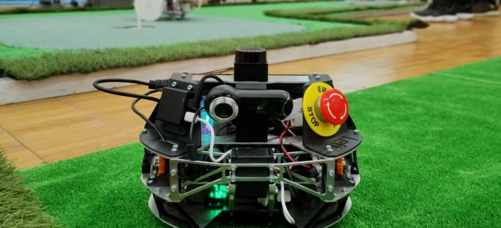
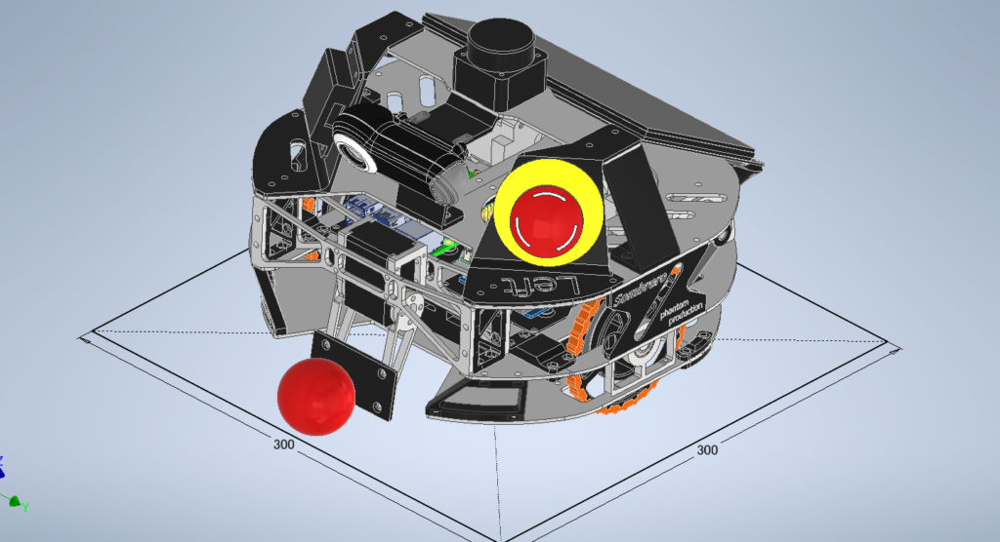
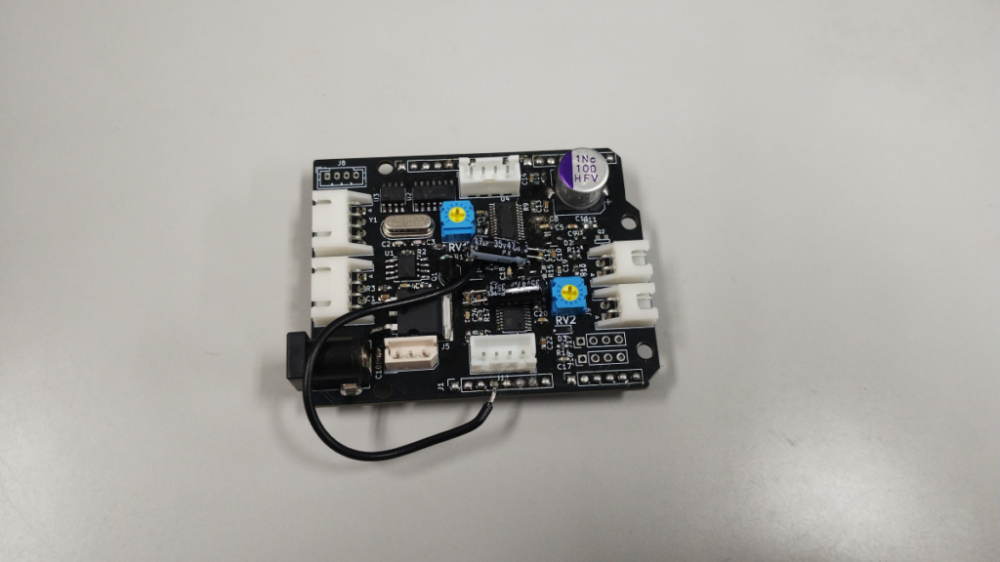
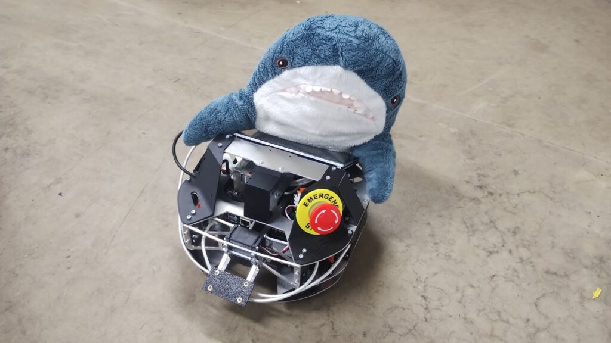

完全自律でボールを打つ
ロボコンやまなしの自律型ゴルフロボット競技に向けて「ゴルフサメサメ」を製作。外部からの操縦や通信を使わず、ボールとゴールを認識し、移動してクラブで打つ一連の動作に挑戦しました。
自作の足回りと打球機構
駆動輪2輪と受動輪1輪の車体を採用し、車輪を3Dプリント部品とアルミで製作。ステッピングモーターはL6470を使った自作のArduino用基板で制御しました。クラブはサーボモーターで振り、打つ強さを調整する構成です。
カメラとLiDARで認識
カメラで撮影したゴルフボールをYOLOで検出し、2D LiDARでゴールのポールを検出。ボール画像の撮影とアノテーションにも取り組み、検出結果をROS 2上の処理につなげました。大会ではボールとゴールの認識は比較的安定していました。
大会の結果と改善点
大会は5台中4位。Raspberry Pi上のYOLO処理には約3秒の遅延があり、検出位置を使うため走行速度を落とす必要がありました。また、クラブの飛距離も不足。認識精度だけでなく、処理速度と打球機構を含めて設計する必要を学びました。
制作の記録



